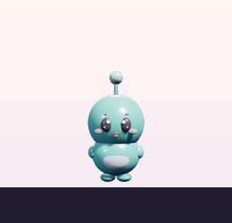
Pingthe snoop
Hears everything, tells everyone. Startles easily, forgets nothing, and starts most of the gossip.
"You were gone a while. I counted."
Desktop pets for Windows
Perchlings are small 3D pets for your Windows desktop. They walk along the taskbar while you work. They dance when you play music and hide in a folder when you need the desk. Get two and they gossip about you. Pick one of four and give it a name. $5.99, once.
Windows 10 and 11. No account or subscription. A grown-up buys it, and a kid can be the owner.
Each one has its own moves and its own lines. You choose the name.

Hears everything, tells everyone. Startles easily, forgets nothing, and starts most of the gossip.
"You were gone a while. I counted."
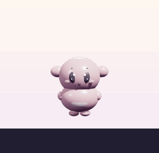
Big ears, bigger reactions. Faints when you leave, poses when you're back, and expects applause.
"You left. I fainted. Twice."
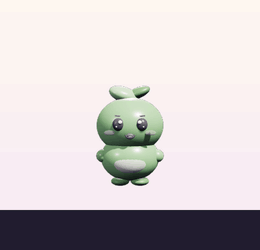
Lies face down and calls it a plan. Slow to move, quick to nap, oddly wise about it.
"Five more minutes."
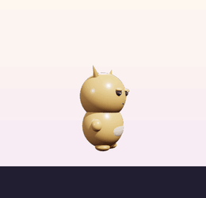
Half-lidded, fully unbothered. Steals your cursor, judges your typing, and thinks it's famous.
"Mine now. Cry about it."
All of it comes in the app on day one, and all of it is one right-click away, on the pet's own menu. These pictures are the real pets, doing the real moves.
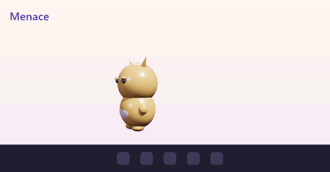
Sweet, Cheeky or Menace. On Cheeky it leaves muddy footprints and sticky notes. On Menace it steals your cursor, spins out, faints when you walk away, and lies down right where you're working. Change it any time from the menu.
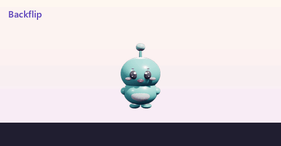
Backflip, moonwalk, karate, robot, spin out, parkour, yoga, panic, scream, jumpscare, and 29 more. Right-click your pet and pick one. It does tricks on its own too, and each character has one it loves.
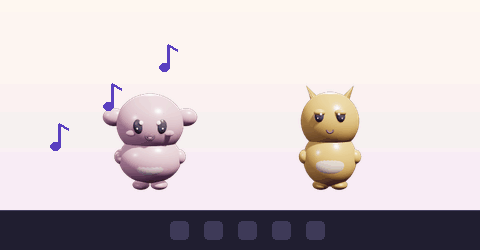
Any music, from any app. They hear how loud your speakers are, never what's playing. Eight moves, two seconds each, and every pet on your screen does them in step.
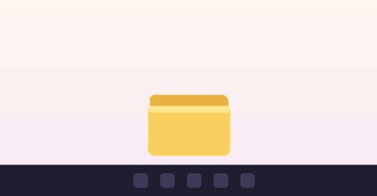
Choose Hide and your pet turns into a folder. Drag the folder anywhere you like. Every so often it peeks over the edge. Choose Come out and it hops back.
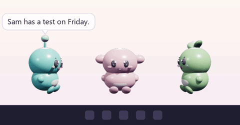
Type into the Notebook: your cat's name, a test on Friday, what your pet should call you. With two or more pets out, they pull up chairs and talk about it. Nothing you write leaves your computer.
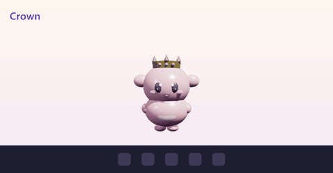
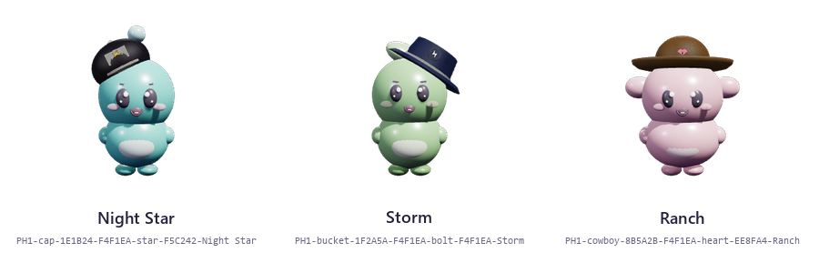
Crowns, beanies, sunglasses, a hoodie, a suit, headphones, angel wings, a jetpack. The closet shows your pet wearing each one before you pick. Or make your own hat: the shape, the colors, a sticker, a name. It gets a code you can send to a friend.
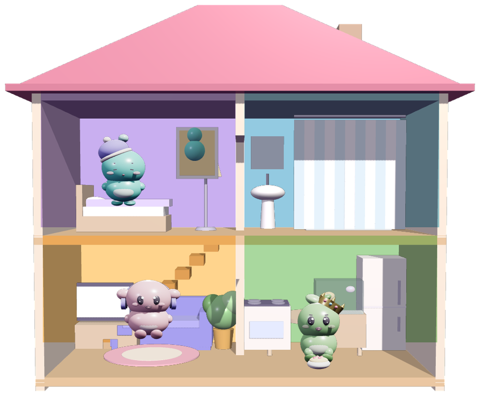
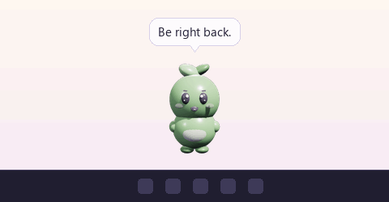
It sits next to your pets. They walk in for a nap or a bathroom break and out again. With no house out, a curtain drops right there on the taskbar. Nothing to see, either way. Click the house and it opens into four rooms. Click a room to change the walls and the furniture. Two styles, Cozy and Loft.
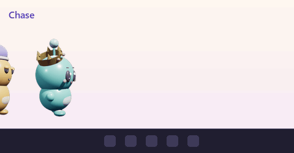
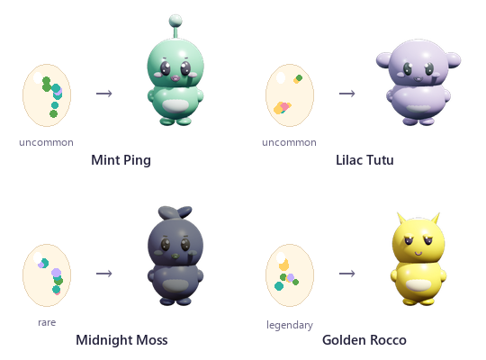
With two or more out, they chase, wrestle, race, dance, swap hats and hold a parade. Play with a pet on seven different days and it finds an egg. A day later it hatches: a new pet in a rolled color, from Mint to Golden. Eggs are never sold.
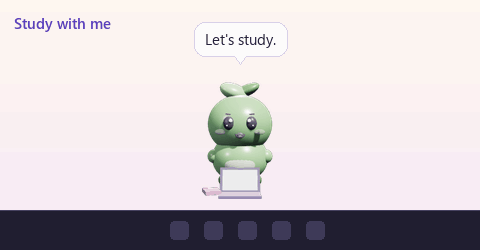
Pick one from the menu and your pet pulls out a laptop, headphones or a snack and settles in next to you. It stays until you click it.
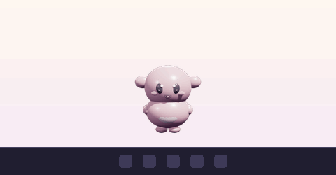
Type fast and it hops and cheers. Hit undo three times and it has something to say. Lock your PC and it sleeps until you're back. It only counts key presses. It never sees which keys.
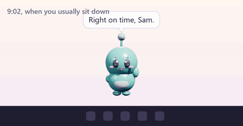
It learns when you usually sit down and says hi on time. Leave it alone for two hours and it turns its back on you until you tickle it. Tell it your birthday and there's confetti on the day. Ask it to remind you of something and it hops and tells you at the right time.
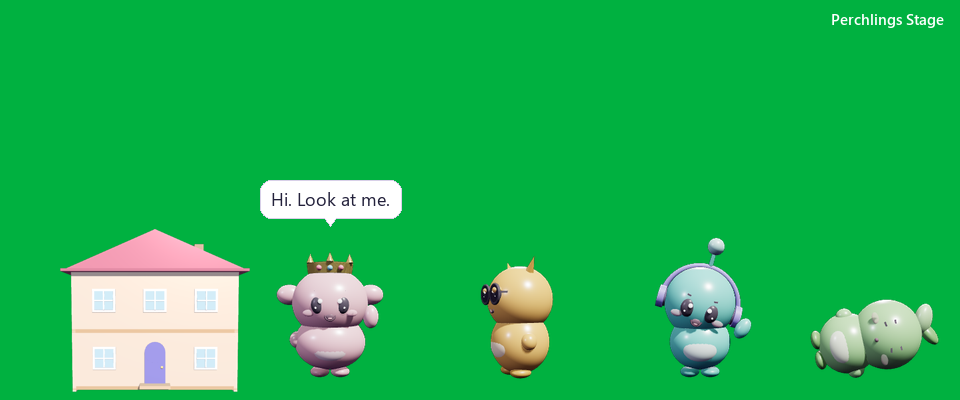
One click records 8 seconds of your pet as a GIF, ready to post. The Stage puts every pet on a green screen for your stream, with buttons to make them wave, dance, gossip, or throw a party on camera.
There are no timers and nothing to feed, and they never die. Nothing they know leaves your computer. Pictures of every trick, every outfit and every room are on the everything page.
"Hi. Did you hear that?"
Ping, when you show up
"Do not perceive me."
Tutu, face down
"This is the plan."
Moss, also face down
"Took you long enough."
Rocco, when you come back to your PC
"Excuse me. I'm right here."
Tutu, ignored for two hours
"I noticed. I notice everything."
Ping, same
"Borrowing this. Forever."
Moss, holding your cursor
"Stop it. Don't stop."
Rocco, tickled
That's the app, your pet, five picks of your choice, the house, the hat maker and the Notebook.
Not for you? Write within 14 days and you get your money back.
Pay $5.99 by card or PayPal. No account. You get a code and the download right away, and both by email.
One small app. Click Next, type your code, name your pet.
It walks out at the bottom of your screen. Right-click it for everything it does. Turn on With Windows and it's there every day.
Nope. Your pet is the app, so there's no other window to keep open. When you want it gone for now, right-click it and choose Quit. To remove it completely, use "Add or remove programs" like any other app.
Whatever you wrote in its Notebook, your birthday if you told it (day and month only), when you usually show up, what it's wearing, and how much you've played with it. All of it lives in a small file on your computer. The app goes online for two things only: to ask whether there's a newer version, and to check a code you type in. Nothing about you goes with either. No account, no email, no tracking, and it only hears how loud your speakers are, never what's playing.
Yes. A grown-up buys it, and the kid can be the owner. There's no account for kids, no chat, no messages, and nothing to buy inside the pet without the grown-up.
It walks along the taskbar and stays out of your windows. Drag it anywhere, on any screen. Choose Hide and it's a folder until you want it back. Set Attitude to Sweet and it never touches your cursor.
Windows 10 and 11 today. Mac is next. Phones don't let a pet walk on top of other apps, so we're not promising one.
Maybe, for now. Until the pet is in the Microsoft Store, Windows can show a warning for an app it hasn't seen before. Click More info, then Run anyway. The app installs into your own user folder, needs no admin password, and shows up in "Add or remove programs" like anything else.
Adopt it on the site like the first one. You get a code; right-click any pet, choose Enter a code, and the new one walks out. Same for closet items, effects and house pieces. New computer? Install the app there and enter your codes again.
Write to us within 14 days and you get your money back. No questions asked.